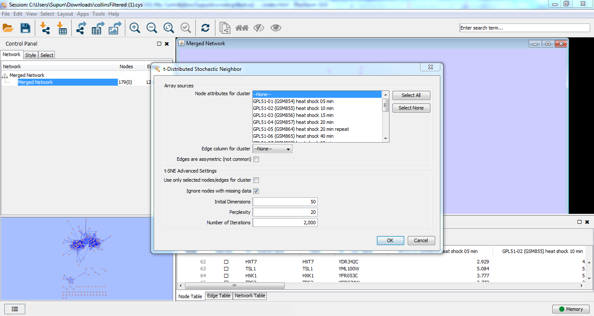
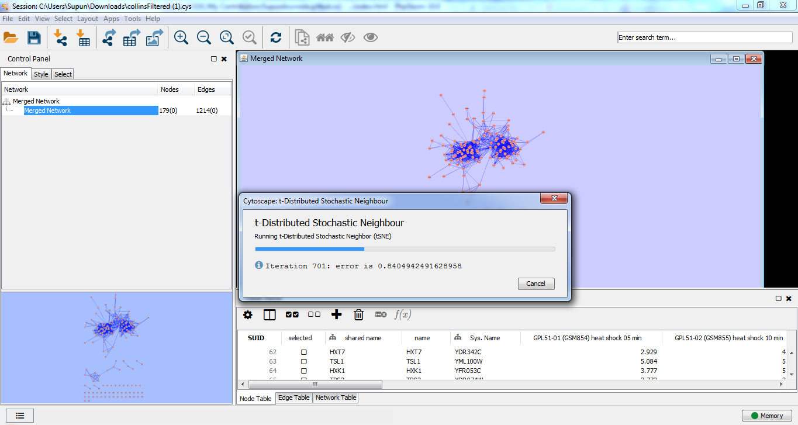
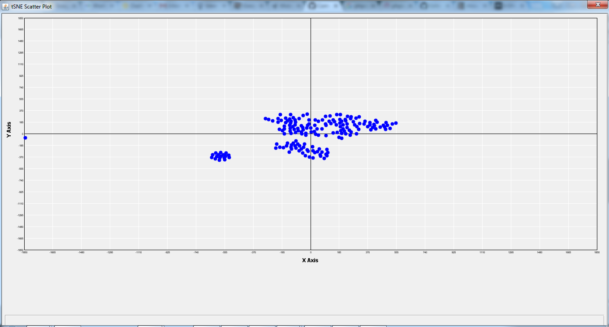

About Cytoscape
Cytoscape is an open source tool for visualizing network with any type of data. I worked with National Resource for Network Biology to develop two dimensional reductions algorithms which work with the Cytoscape tool. There is a plugin called clusterMaker2 and I contributed it to develop the algorithms which have the ability to do dimensional reduction.
My Contribution
Major part of my project was to develop Principal Coordinate Analysis and t-Distributed Stochastic Neighbor Embedding in clusterMaker2. I had to surf through lots of resources to figure out how these algorithms react in networks. In addition it was too hard to figure out the usage of the current API in clusterMaker2.
My mentor adviced me to complete algorithm parts before the mid evaluation and connect with those algorithms with cytoscape before the final evaluation.
Mentor : Scooter Morris
Work that got merged:
Link contains all the commits to the clusterMaker2 repository.
Snapshots from t-Distributed Stochastic Neighbor Embedding
  Issues To Be Solved
Principal Coordinates Analysis depends on Gowers matrix. It uses significant memory when processing a large matrix. So it should be solved when setting up large matrixs as input.
My experience
GSOC 2k16 was my first ever open source contribution project. It was unbeliveable that my proposal accepted. New technological exposure and understanding about network based algorithms were the most significant experience to my life. I would like to expand my sincere gratitude to my mentor for guiding through the entire project . His mammoth contribution through thick and through thin was my strength in this achivement.